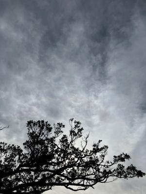
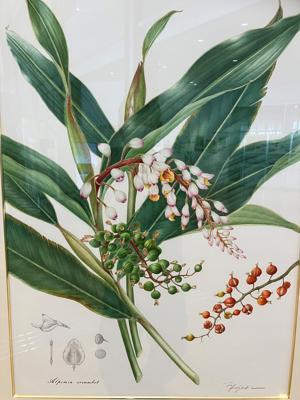

うるがいの話 ある日
最新: chtGPTに教えてもらう【うるがいの話 ある日】とは 一日だけのプログです
『うるがいの話』の最新一日だけのプログで、通信料が少なく経済的だ。カニの画像をクリックすると全ての日付が載る『うるがいの話』サイトを表示します
|
|
【うるがいの話】 うるがい(ｳﾙｶﾞｲ urugai)とは、『もずくがに』の名前でとても大きくなります。 |
|---|---|
|
|
【カミマヤーの話】 猫のことを方言でマヤーといいます。カミマヤー（kamimayaa）とは、神の猫のことです。 |
|
【たながぁの音楽】 たながぁ（ﾀﾅｶﾞｰ tanagaa）とは手長えびのことで、何種類かあり大きいのは車 エビぐらいになります。 |

|
【ぶながぁの話】 ぶながぁ(ﾌﾞﾅｶﾞｰ bunagaa)とは、赤い髪の毛、赤い身体、そして身長は１ｍ２０ｃｍ ぐらい、川の蟹を食べているの目撃された。場所は沖縄県国頭郡大宜味村のと ある村僕の隣近所に住んでいる爺さんから、聞いた話です。 |
|
|
【ギーマの話】 ギーマ(giima)とは、山原の里山に咲くスズランに似た、 花を付けます。実は食べられます、 気が付くと口の周りが紫になっています。 |
2023年07月12日 (水）chtGPTに教えてもらう
15:13

現在無職で
会社に所属していません
あるサイトで会社名が必須項目になっており
campany name is requierd
と入力を求められています
空白だと怒られます
回答案を教えてください
無職の場合、会社名を入力する必要はありません。ただし、サイトが会社名
を必須項目として要求している場合、以下のいくつかの方法を試してみるこ
とができます。
1."Unemployed"（無職）や"Self-employed"（自営業）など、自分の現状
を正直に表すキーワードを入力してみてください。
2."N/A"（Not Applicable）や"None"（なし）など、会社名の代わりに特定
の記号やキーワードを入力してみてください。
3."Not applicable - Currently unemployed"（該当なし - 現在無職）など
、詳細な説明を添えて入力してみてください。
これらの方法を試しても問題が解決しない場合、サイトのカスタマーサポー
トに連絡し、状況を説明して対応策を求めることをおすすめします。
なるほど、とある外国のサイトへは３を回答と採用した。

１５時０５分 ビットコインの総資産 ￥１２、４３７（↓４８）